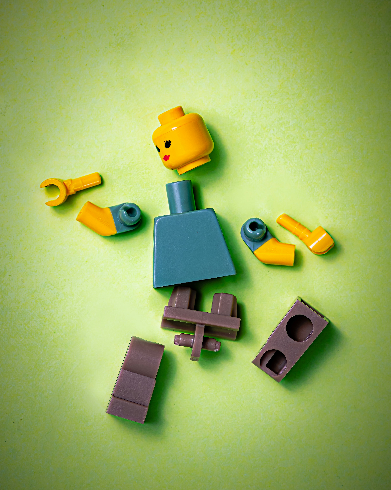
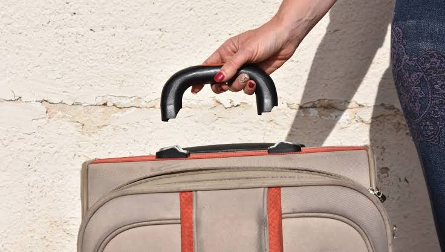

VIDA ÚTIL
¿Cuándo podemos decir que un objeto realmente llegó al final de su vida?
La vida útil de un producto no depende solamente de cuánto tiempo funciona, sino también de cómo fue diseñado.
¿Cuándo podemos decir que un objeto realmente llegó al final de su vida?

¿Por qué algunos productos son reemplazados aunque todavía funcionen?

¿Qué significa que un objeto pueda ser reparado?

¿Qué sucede cuando decidimos que un objeto ya no nos sirve?


OBSERVARSe puede facilitar —o dificultar— su reparación.
Cuando una pieza se rompe, no necesariamente tenemos que reemplazar todo el producto. Un objeto diseñado para durar puede permitir desmontar sus componentes, reemplazar piezas y realizar mantenimiento.

REPARAR
Una rotura no siempre significa que el objeto llegó a su fin. Repararlo puede devolverle su función y prolongar su vida útil.

REUTILIZAR
Un objeto que ya no cumple su función original puede transformarse o utilizarse de otra manera.

RECICLAR
Cuando reparar o reutilizar ya no es posible, recuperar sus materiales puede ser una alternativa al descarte.